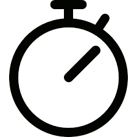

г.Харьков
проспект Независимости, 17
ул. Культуры, 17

10:00 - 21:00
Ежедневно
г.Харьков
проспект Независимости, 17
ул. Культуры, 17
10:00 - 21:00
Ежедневно
МУЖСКАЯ СТРИЖКА 300 ГРН.
ТРАДИЦИОННОЕ БРИТЬЕ300 ГРН.
СТРИЖКА УСОВ И БОРОДЫ200 ГРН.
УКЛАДКА100 ГРН.
СТРИЖКА + БОРОДА400 ГРН.
СТРИЖКА МАШИНКОЙ150 ГРН.
ДЕТСКАЯ СТРИЖКА250 ГРН.
ПАПА + СЫН450 ГРН.
Здравствуйте, господа! С радостью представляем вам новый барбершоп в Харькове!
Наши преимущества:
В городе много парикмахерских, бербершопов и других заведений, где лицо и голову мужчины могут привести в порядок. Но мы все-таки настаиваем − лучше стричься и бриться у нас.
Мы очень внимательно относимся к деталям. Наши горячие полотенца не обжигают кожу, но и не отдают холодом. Вам действительно будет приятно.
К любой прическе и стилю подходим творчески. Вы хотели бы что-то изменить, но не выходить за пределы стиля "ламберджек"? Нет вопросов − будет вам ламберджек. Каждую неделю − абсолютно новый и оригинальный.
Атмосфера у нас − особенная. Да, все сейчас предлагают кофе и даже виски. Но у нас бариста в кофе вкладывает всю душу, а виски наливают чуть больше. Это сложно передать словами, нужно хотя бы один раз попробовать.
Посещая нас, вы не тратите время на транспорт, пробки и прочие ненужные вещи. Лучше эти полчаса потратить на общение в приятной компании.
У нас есть не только лучшие мастера в городе, но еще и все, что только может понадобиться мужчине, который следит за своей внешностью. Вы даже не представляли, что есть такие эффективные средства по уходу за волосами, бородой и кожей лица. Мы поможем вам каждый день выглядеть лучше всех.
В зале всегда людно. У нас собираются лучшие представители мужской части города. Вы не только будете общаться с интересными людьми, но и сможете завести полезные знакомства.
Удобные кресла. Вы присели и расслабились, отдыхаете от работы и дневной суеты, пока мастер работает над вашим стилем.
Не стесняемся честно признаться, что мы − лучший барбершоп Харьков. Идеальная мужская парикмахерская.
Если вы − деловой человек и у вас на счету каждое мгновение, наберите нас по номеру +38(098)748-22-99. Администратор запишет вас и вы гарантировано получите свободное кресло и лучшего мастера в указанное время.
Если вы − современный человек, забронируйте кресло онлайн. Всего несколько кликов, не нам рассказывать, как это делается.
Если вы познали истину и цените каждое мгновение жизни, просто приходите в любое удобное время с 10:00 и до 21:00. Даже если все кресла будут заняты, вы чудесно проведете время, в кругу настоящих мужчин и, как минимум, одной прекрасной дамы. Стаканчик виски, чашечка кофе и приятная беседа о смысле жизни или вчерашнем боксерском поединке вам гарантирована.
Что мы предлагаем и сколько это стоит
Только вы решаете, какой стиль вам больше идет. А наш мастер предлагает вам множество интересных вариантов. Каждая прическа, даже очень коротка, это небольшое произведение искусства, сочетание творчества и природной красоты. Мы принимаем на работу только лучших мастеров, с богатым опытом и безупречными рекомендациями. Конечно, они работают не быстро, но максимально аккуратно и точно. Время летит, вы даже и не заметите, как ваш стиль будет доведен до совершенства, мастер снимет накидку и предложит оценить свою работу.
Рекомендуем брать с собой сына, если вам уже повезло обзавестись наследником. Посещение мужских заведений − это, пожалуй, лучшее, что отец может дать своему сыну в качестве воспитания. Мальчик должен взрослеть, видя наглядные примеры правильного поведения, а не выслушивая нудные лекции.
Рекомендуем посещать наше заведение хотя бы один раз в 2-3 недели. Нет, можно не стричься так часто, но мастер всегда найдет мельчайшие нюансы, которые стоит поправить. Пусть ваш внешний вид всегда будет безупречным, а длина каждого волоса на открытых частях тела с точностью до одного миллиметра соответствует вашим пожеланиям.
Выберите один день в неделю, который принадлежит только вам. Не обязательно вечер пятницы. Пусть это будет утро среды или обед понедельника. Вы вольны распоряжаться своим временем и не обязаны подчиняться тому же графику, что и другие. Посвятите час или два только себе, выключите телефон и расслабьтесь. Ничто не должно мешать удовольствию.
Приходите к нам, как только ваше отражение в зеркале вызовет у вас хотя бы малейшее сомнение.
Мы его быстро развеем!